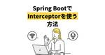
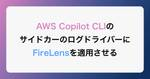

エキサイト TechBlog.
https://tech.excite.co.jp/
エキサイト TechBlog.
フィード
【実験記】data属性を使用してスタイリングする方法
エキサイト TechBlog.
こんにちは。エキサイトでデザイナーをしている齋藤です。 今回は、HTMLのdata属性を使用してスタイリングする実験をしてみたので、その方法や所感について記したいと思います。 data属性とは？ data属性は、HTMLタグに対して独自の属性を付与できる機能です。 data-に続けて任意の名前を付与することで設定でき、JavaScriptやCSSから参照できます。 data-以下の命名は基本的に自由ですが、以下の通りの制限があります。 大文字小文字にかかわらず、名前を xml で始めてはならない。 名前にコロン (:) を含めてはならない。 名前に大文字を含めてはならない。 （引用元：data…
6時間前

[Java] Spring BootでInterceptorを使う方法
エキサイト TechBlog.
はじめに こんにちは、新卒2年目の岡崎です。 Interceptorを使用すると、コントローラーで処理を実行する前後に共通の処理を行うことができます。今回は、Spring BootでInterceptorを使う方法をご紹介します。 環境 Java openjdk version "21.0.2" 2024-01-16 LTS OpenJDK Runtime Environment Corretto-21.0.2.13.1 (build 21.0.2+13-LTS) OpenJDK 64-Bit Server VM Corretto-21.0.2.13.1 (build 21.0.2+13-LT…
2日前
embulkでBigQueryからデータベースにデータを移行した話
エキサイト TechBlog.
はじめに 新卒2年目の岡崎です。最近、embulkでBigQueryからデータベースにデータを移行しました。その時のことを備忘録として記事にします。 データ移行を行った理由 今までは、過去のデータをGoogleが提供していたUAから見て、分析できました。しかし、UAはGA4に移行を完了するにあたり、過去のデータを見れなくなりました。過去のデータが自社のデータベースにないと、毎回BigQueryを使ってデータを見なくてはいけません。この問題を解決するため、embulkを使ってBigQueryからデータベースにデータを移行します。 前提 今回はembulkを使い、BigQueryからデータベースへ…
3日前
Thymeleafでページのパスに応じてclassを付与する方法
エキサイト TechBlog.
こんにちは。エキサイトでデザイナーをしている齋藤です。 今回はThymeleafでページのパスに応じてHTML要素にclassを付与する方法をご紹介します。 ページのパスに応じてclassを付与したい場合とは？ 作ってみる 結果 さいごに ページのパスに応じてclassを付与したい場合とは？ 冒頭、ページのパスに応じてclassを付与したい場合とはどんな状況なのか整理します。 よくある例としては、ユーザーがアクセスしているページの項目の文字を強調するといった挙動を持つグローバルナビゲーションです。 ユーザーがアクセスしているページの項目の文字が強調されるグローバルナビゲーションの例 作ってみる…
3日前
【Flutter】pubspec.yamlでのライブラリバージョン指定とセマンティックバージョニングについて
エキサイト TechBlog.
こんにちは。エキサイト株式会社でエンジニアをしている岡島です。 今回は、pubspec.yamlでのパッケージの管理について、調べたことを共有していこうと思います。 pubspec.yamlでのバージョン指定方法 バージョン指定なし 指定されたバージョン バージョンの範囲指定 キャレット構文での指定 パッケージバージョンのアップグレード 通常のアップグレード メジャーバージョンを含むアップグレード セマンティックバージョニングとは 「依存性地獄（dependency hell）」の問題 セマンティックバージョニングの基本原則 メジャーバージョン: 1.x.x マイナーバージョン: x.1.x …
4日前
Alpine.jsで特定の要素の外側がクリックされたことを検知する方法
エキサイト TechBlog.
こんにちは。エキサイトでデザイナーをしている齋藤です。 今回はAlpine.jsで、特定の要素の外側がクリックされたことを検知できる、x-onのModifierの一つである.outsideが便利だったのでシェアしたいと思います。 作りたいもの まずはドロップダウンを作ってみる x-on.outsideで要素の外側がクリックされたことを検知する さいごに 作りたいもの 冒頭に作りたいものをお示しします。CodePenをご用意しましたので、ぜひ触れてみてください。 ドロップダウンの場合、ボタンのみではなく、ドロップダウンの外側をクリックしても閉じられるようにすることで、ユーザーはより直感的に操作が…
4日前
[AWS Copilot CLI] 環境作成時に作られたロールに対し、デプロイ用のロールを信頼ポリシーに追加する方法
エキサイト TechBlog.
はじめに 新卒2年目の岡崎です。今回は、AWS Copilot CLIで環境作成時に作られたロールに対し、デプロイ用のロールを信頼ポリシーに追加する方法を紹介します。 問題点 Github ActionsでAWS上のサービスにデプロイする時、Github Actionsのデプロイ用のロールを使っています。この時、AWS Copilot CLIでの環境作成時に作られたロールに対し、Github Actionsのデプロイ用のロールを信頼ポリシーに追加しければ、デプロイできませんでした。 よって、この問題を解決し、無事にGithub Actionsでデプロイすることを今回の目的とします。 解決策 今…
5日前
新卒がアプリバグ出し会に取り組み、アプリのクラッシュ率を改善した話 1
1
エキサイト TechBlog.
こんにちは！エキサイトでアプリエンジニアをしている岡島です。今回はアプリ開発に携わるようになり、アプリクラッシュ率の改善につながった「バグ出し会」の取り組みについてお話しします。 バグ出し会とは？ なぜバグ出し会を始めたのか？ クラッシュ率の改善によって期待したいこと バグだし会の成果 まとめ バグ出し会とは？ 私たちのチームでは、2週間に1回、30分間のバグ出し会の取り組くを始めました。この会では、開発メンバー全員がウーマンエキサイトのアプリを実際に操作し、バグや不具合を見つけ出す作業を行います。バグ出し会は 「みんなでアプリを良くしていく」という共通認識のもと集まり、アプリの改善点について…
8日前

AWS Copilot CLIのサイドカーのログドライバーにFireLensを適用させる 1
エキサイト TechBlog.
はじめに エキサイト株式会社 バックエンドエンジニアの山縣（@zsp2088dev）です。 現在、既存サービスのリビルドにあたり、AWS Copilot CLIを使用してコンテナ環境を構築しています。 コンテナ環境には、サイドカーコンテナにnginxを使用しており、またログをFireLensで管理しています。 この時、Manifestにloggingセクションを定義し、メインコンテナのログドライバにFireLensを適用できたものの、サイドカーコンテナにはFireLensを適用できない問題がありました。 本記事では、上記の原因と解決策についてまとめます。 また、本記事内で扱うAWS Copil…
10日前
Figma VariablesのScoping機能で使用先を間違わないトークン設計をする 1
エキサイト TechBlog.
こんにちは。エキサイトでデザイナーをしている齋藤です。 今回はFigmaのVariablesでデザイントークンを設計する際に、Scoping機能を用いて使用先を間違わないようなトークンを設計する方法をご紹介します。 解決したいこと Scoping機能で使用先を制限する さいごに 解決したいこと 例えば、角丸用のトークンを作成したとします。 Variablesで角丸用のトークンを作成 単にトークンを作成した初期状態ですと、GapなどCorner Radius以外の箇所でもトークンを呼び出せてしまいます。 Gapの値でも角丸用のトークンが呼び出せてしまう このような状態にしておくと、トークン設計者…
11日前
Tailwind CSSで文章を行数制限したい場合はline-clamp-*が便利
エキサイト TechBlog.
こんにちは。エキサイトでデザイナーをしている齋藤です。 今回はTailwind CSSを使用しているプロジェクトで、文章を行数制限（超えた部分は3点リーダーで省略）したい場合に使える便利なユーティリティクラス line-clamp-*をご紹介します。 純粋なCSSの場合 Tailwind CSS場合 さいごに 純粋なCSSの場合 純粋なCSSの場合、行数制限をしたい場合は overflow display -webkit-box-orient -webkit-line-clampの4つのプロパティを組み合わせることで設定することができました。 p { overflow: hidden; dis…
11日前

【新卒研修体験談】社内ツールの実運用で見えてきた課題と反省点
エキサイト TechBlog.
こんにちは、エキサイト株式会社でエンジニアをしている2024年度新卒の岡島です。 今回は、新卒研修プロジェクトで開発した社内ツールの実運用が始まったので、このプロジェクトを振り返り見えてきた課題と反省点を共有したいと思います。 はじめに 社内ツールの運用が始まっての反響 エンジニアとしての反省点 運用面での課題 1. イレギュラーケースへの対応が大変 2. 将来の拡張性を意識できていなかった 学んだ教訓と今後について はじめに 新卒研修では、２人のデザイナーと２人のエンジニアで約1ヶ月間の技術研修を行いました。この研修では、エキサイトグループの全社員を対象としたメンタル状況を定期的にアンケート…
16日前
Flutter 3.22アップデートで起きたビルドエラーの解決方法 RangeError (offset): Invalid value: Not in inclusive range
エキサイト TechBlog.
こんにちは。エキサイト株式会社でアプリエンジニアをしている岡島です。Flutter SDKのバージョンアップをする際、iOS・Androidともにビルドができなくなりました。今回はなぜビルドができなくなってしまったのか、そのエラーの原因と解決方法について共有したいと思います。 はじめに Flutter 3.22にアップデートを行った際に、APKビルド時に次のようなエラーが発生し、ビルドを完了することができませんでした。 Unhandled exception: RangeError (offset): Invalid value: Not in inclusive range 0..1241:…
18日前
Tailwind CSSでブレイクポイントをカスタマイズする方法
エキサイト TechBlog.
こんにちは。エキサイトでデザイナーをしている齋藤です。 今回はTailwind CSSでレスポンシブデザイン用のブレイクポイントをカスタマイズする方法をご紹介したいと思います。 はじめに 従来のCSS Tailwind CSSのユーティリティクラスを用いたレスポンシブデザインの実装 カスタマイズ方法 max-widthで定義したい場合 さいごに はじめに Tailwind CSSではブレイクポイント用のユーティリティクラスが用意されており、メディアクエリを書くことなくレスポンシブデザインを実装することができます。 Tailwind CSSによって用意されたブレイクポイント 従来のCSS .co…
18日前
SpringBootのローカル環境でSSOしているプロファイルでAWS Parameter Storeから値を取得する方法
エキサイト TechBlog.
エキサイト株式会社メディア事業部エンジニアの佐々木です。タイトルがわかりにくいですが、SpringBootのローカル開発環境でもAWS PamareterStoreにある値を使用したいのでご紹介します。通常はAWS ParameterStoreのパッケージを入れるだけで、すぐできるのですが弊事業部はAWS SSOを全面的に採用しています。($HOME/.aws配下に設定を書かないです)このAWS SSOの場合の設定が割となかったので書きます。 前提 $ java --version openjdk 21.0.3 2024-04-16 LTS OpenJDK Runtime Environmen…
23日前
AWS Copilot CLI の manifest.yml で定義できない設定をYaml Patchを使用して設定する
エキサイト TechBlog.
エキサイト株式会社エンジニアの佐々木です。AWS Copilot CLIはECS Fargateを使うにはかなり便利なツールですが、その分設定ファイルでできないことも結構あります。AWS Copilot CLIのチームもそれがわかっているのか、YamlでPatchを当てる機能をリリースしています。 実現したいこと AWS Copilot CLI で作成したECS Fargateの環境のログ送信をAWS CloudWatch LogsからFirelensに変更する になります。CloudWatch Logsは料金が高いのでエラーログ以外はFirelensからS3に転送して節約したいと思います。 …
24日前
AWS Copilotを利用してコンテナアプリケーションを高速に立ち上げる
エキサイト TechBlog.
エキサイト株式会社エンジニアの佐々木です。IaCといえば、Terraformがデファクトスタンダードですが、AWSのECSを利用しているのであれば、 AWS Copilotコマンドが便利だと思いますので紹介します。 前準備 AWS クレデンシャルの設定 AWS Copilotの環境構築 copilot app init copilot env init copilot env deploy copilot svc init copilot svc deploy まとめ さいごに 前準備 AWS Copilot CLIをインストールしておきます。 aws.github.io AWS クレデンシャ…
24日前
Gitエイリアスを設定してよく使うコマンドを簡略化する方法
エキサイト TechBlog.
こんにちは。エキサイトでデザイナーをしている齋藤です。 私はGit操作をコマンドで行うことが多いのですが、長いGitコマンドは入力が手間だったり、typoしやすかったりするためGitエイリアスを設定してコマンドを簡略化しています。 今回は、そんなGitエイリアスの設定方法についてご紹介したいと思います。 Gitエイリアスを設定するとどんなことができるのか 設定方法 .gitconfigを開く [alias]セクションを作り定義していく （おまけ）現在いるローカルブランチ名を素早くクリップボードにコピーできるようにする さいごに Gitエイリアスを設定するとどんなことができるのか 例えば、swi…
24日前
Lombokの@RequiredArgsConstructorにSpringBootの@Qualifierを渡したいときのlombok.copyableAnnotationsの設定方法
エキサイト TechBlog.
エキサイト株式会社メディア事業部エンジニアの佐々木です。Lombokの@RequiredArgsConstructorが便利で弊社では多用しているのですが、@Qualifierを使用したいときに、コンストラクタを書かないといけないのが面倒でした。Lombokのドキュメントを眺めていたところ解決方法があったので、ご紹介します。 DIの登録コード DIの呼び出しコード lombok.configでの設定 まとめ 最後に DIの登録コード 下記のようにRestClientを複数個設定することは、結構あるかなと思います。 @Configuration public class RestClientCo…
1ヶ月前
Tailwind CSSの@applyを使用してUtility classをまとめた独自Classを定義する方法
エキサイト TechBlog.
こんにちは。エキサイトでデザイナーをしている齋藤です。 今回はTailwind CSSの@applyを使用してUtility classをまとめたClassを独自に定義をする方法をご紹介します。 なぜUtility classをまとめたいのか Utility classをまとめた独自Classを定義する方法 独自Classを定義する場所 @applyを使用して独自Classを定義する方法 さいごに なぜUtility classをまとめたいのか 前提として、Utility classをまとめたいシーンについて整理をします。 Tailwind CSSは用意されたUtility classを使用す…
1ヶ月前
【Flutter】PopScopeを理解する
エキサイト TechBlog.
はじめに こんにちは。エキサイト株式会社でアプリエンジニアをしている岡島です。 今回は、PopScopeについて勉強したことをまとめていこうと思います。 はじめに バージョン PopScopeとは 基本的な使い方 まとめ 参考記事 バージョン Flutter: 3.22.2 PopScopeとは PopScopeとは、戻るジェスチャを使用した時の動作をコントロールするウィジェットです。 WillPopScopeの後継となるウィジェットであり、WillPopScopeがFlutter v3.12.0-1.0.preからdeprecatedになったため、以前にWillPopScopeを使用していた…
1ヶ月前
【Flutter/Dart】enum, enhanced enumsについてとenumの要素→文字列に変換する方法
エキサイト TechBlog.
はじめに こんにちは。エキサイト株式会社でエンジニアをしている新卒の岡島です。 普段業務ではFlutterを用いたアプリ開発を行っています。 今回は、業務中にenumについて学んだことがあるので、勉強したことも含めて共有していきたいと思います。 私は、列挙型は単に列挙するだけだと思っていたのですが、想像以上に奥が深くて勉強になりました。前半では公式ドキュメントでの言語仕様を確認し、後半ではenumの使用例について書いていこうと思います。 はじめに 列挙型（enum）とは？ 環境 Dartでのenumの定義 シンプルなenum enhanced enums enhanced enumの要件 en…
1ヶ月前
Tailwind CSSでfont-sizeやline-heightなどの文字の構成要素がまとまったタイポグラフィトークンを定義する
エキサイト TechBlog.
こんにちは。エキサイトでデザイナーをしている齋藤です。 今回は、Tailwind CSSで文字の主な構成要素であるfont-size、font-weight、line-height、letter-spacingをまとめたタイポグラフィトークンを定義する方法についてお話します。 CSSを用いた従来のトークン設計 CSSを用いたトークン設計の例（定義部分） CSSを用いたトークン設計の例（使用部分） Tailwind CSSで文字の構成要素がまとまったタイポグラフィトークンを定義する Tailwind CSSを用いたトークン設計の例（定義部分） Tailwind CSSを用いたトークン設計の例（使…
1ヶ月前
Spring Securityでログイン後に任意の処理を行なってからログイン前にアクセスしたページにリダイレクトする
エキサイト TechBlog.
こんにちは、エキサイト株式会社の平石です。 今回は、Spring Securityでログイン後に任意の処理を行なってからログイン前にアクセスしたページにリダイレクトする方法をご紹介します。 はじめに 環境 実現方法 終わりに はじめに Spring SecurityはSpringで利用できる、認証とアクセス制御のためのフレームワークです。 IDとパスワードによるフォームログインやOAuth2ログインなど、さまざまな認証・アクセス制御の設定を行うことができます。 通常、ログインが必要なページに非ログイン状態でアクセスした場合、ログイン画面を表示しログインが必要なことをユーザーに伝えます。 そして…
1ヶ月前
【Flutter】dioのInterceptorでAPI通信の共通処理を実装する
エキサイト TechBlog.
こんにちは。エキサイト株式会社 モバイルアプリエンジニアの克です。 今回は、FlutterにおけるdioのInterceptorを利用したAPI通信時の共通処理の実装についてお話しします。 各種バージョン Flutter: 3.22.2 dio: 5.4.3+1 Interceptor dioはFlutterでHTTP通信を行う際によく用いられるパッケージですが、その中でもInterceptorはリクエスト/レスポンス/エラーの際に処理を割り込ませるために用意されたものです。 Interceptorの使い方 Interceptorを使用する際には下記の2通りの方法があります。 Intercep…
1ヶ月前
AWS Summit Japan 2日目にオフライン参加してきました
エキサイト TechBlog.
こんにちは、エキサイト株式会社の平石です。 2024年6月20日（木）、21日（金）の二日間に渡り開催された AWS Summit Japan の2日目に参加しました。 会場 セッション 基調講演 AWS NoSQL コスト削減大全 生成 AI の発展的な活用 展示 おまけ 終わりに 会場 今回のイベントは千葉県の幕張メッセでのオフラインと、ライブ配信でのオンラインのハイブリッド形式で開催されました。 オフライン会場では、セッションの会場となるA 〜 Oまでの「部屋」と、さまざまな企業によるAWS活用事例の展示、AWS公式によるソリューション展示がありました。 セッションが行われる「部屋」の様…
2ヶ月前
pre-commitを使用してgit commit時にPrettierを実行させる
エキサイト TechBlog.
こんにちは。エキサイトでデザイナーをしている齋藤です。 前回、【JetBrains製エディタ対応】PrettierでTailwind CSSのclass名を規則的に自動ソーティングさせる と称して、IntelliJ IDEAでファイル保存時にPrettierを自動実行させる方法をご紹介しました。 前回の記事でご紹介した方法は、IntelliJ IDEAやVS Code特有の環境設定を用いたものでしたが、pre-commitを使用することでエディタに依存せずにPrettierを自動実行できることを業務の中で学びましたので共有します。 pre-commitとは 導入方法 開発環境 プロジェクトのデ…
2ヶ月前
【Terraform】 GitHub Actions から OIDC 認証によって AWS ECS にデプロイ
エキサイト TechBlog.
エキサイト株式会社の@mthiroshiです。 GitHub Actions から AWS ECS にコンテナアプリケーションをデプロイする際に、OIDC 認証を使用して AWS にアクセスする方法を試してみました。その内容について紹介します。 GitHub 公式ドキュメントは下記です。 docs.github.com OpenID Connect（OIDC）とは AWS IAM の ID プロバイダーに GtiHub OIDC プロバイダーを追加 GitHub Actions 用の IAM ロールを作成 GitHub Actions の設定 最後に 採用情報 参考記事 OpenID Conn…
2ヶ月前
チームメンバーとふりかえり会を実施してみた
エキサイト TechBlog.
こんにちは！エキサイト株式会社のまさきちです。 今回は自分の所属するチームで開発プロジェクト終了後にふりかえり会を実施してみた時のことについてお話しします。 メンバーが集まってふりかえりの時間を取ることはあまりなかったので、学びが多い時間でした！ ふりかえり会実施のキッカケ プロジェクト進行中、または終わった後に改善点や良かった点が出てきてもその場の認識だけで終わってしまう事も多々あります。 時間が経つと出来事を忘れてしまい同じ失敗を繰り返してしまう事も... せっかくの学びを活かせていなくて勿体無いなと思い始めました。 ふりかえり手法について 世の中にはさまざまな振り返り手法やツールがありま…
2ヶ月前
【新卒技術研修】24卒メンバーでチーム開発に取り組みました（意識したこと＆学んだこと）
エキサイト TechBlog.
こんにちは。エキサイト株式会社でデザイナーをしている齋藤です。 今回は、24卒技術職メンバーが新卒技術研修で約1ヶ月間チーム開発に取り組みましたので、各々が意識したことや学んだことを体験記として記したいと思います。 はじめに メンバー構成 チーム開発で取り組んだお題 チーム開発を通じて意識したこと デザイナーA デザイナーB エンジニアC エンジニアD チーム開発を通じて学んだこと デザイナーA デザイナーB エンジニアC エンジニアD さいごに はじめに 冒頭、技術職メンバーの構成やチーム開発で取り組んだお題についてご紹介します。 メンバー構成 24卒技術職はエンジニア2名、デザイナー2名で…
2ヶ月前